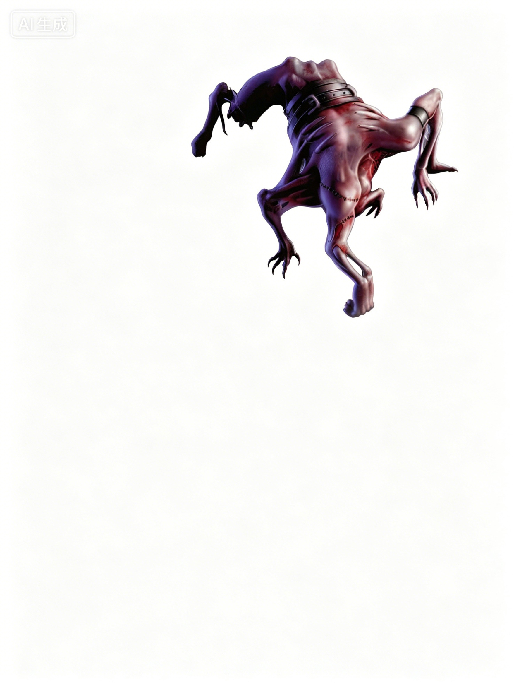

中型不死生物 | 挑战级数 3这个生物是一种可怕的腐烂尸体拼接而成的怪物，四肢扭曲不堪，行走时依靠四肢支撑。巨大的黑铁带紧紧束缚着这些腐烂组织的各个部分，将其拼接在一起。
腐尸缝合怪 ―― 总是中立邪恶。
| 生命骰 | 4d12（26HP） |
| 先攻 | +3 |
| 速度 | 40 英尺 (8 格) |
| 防御等级 | 21，接触 17，措手不及 18；灵活移动（+3敏捷，+4偏斜，+4天生） |
| 近战攻击 | 接触攻击 +5 (1d6+2) |
| 占据/触及 | 5 英尺 / 5 英尺 |
| 灵光 | 邪恶灵光 (30 英尺) |
| 特殊攻击 | 腐蚀之触，邪恶爆发 |
| 特殊能力 | 黑暗视觉 60 英尺，不死生物特性；免疫：不死生物免疫能力 |
| 弱点 | 善良易伤 |
| 豁免 | 强韧 +3，反射 +4，意志 +5 |
| 属性 | 力量 12，敏捷 17，体质 ―，智力 3，感知 12，魅力 7 |
| 技能 | 跳跃 +5，聆听 +5，侦查 +4 |
| 专长 | 强韧加强，灵活移动 (B)，武器娴熟 |
| 语言 | 能理解创造者的命令 |
| 进化 | 5�C7HD (中型)；8�C14HD (大型) |
邪恶灵光 (Su)：活物在距离腐尸缝合怪 30 英尺范围内进行攻击检定和豁免检定时会受到 -2 减值。
善良易伤 (Ex)：善良阵营的武器和法术对腐尸缝合怪造成的伤害增加 50%。
腐蚀之触 (Su)：若腐尸缝合怪通过接触攻击命中活物，则造成 1d6+1 (每 2HD 额外 +1) 点伤害。不死生物则会被治愈相同数值的生命值，超出其最大生命值的部分会作为临时生命值存在，持续 10 分钟。
邪恶爆发 (Ex)：当腐尸缝合怪被摧毁时，它会产生一个范围 30 英尺的爆炸，对范围内的所有活物造成 1d6+1 (每 2HD 额外 +1) 点伤害。不死生物则会被治愈相同数值的生命值，超出其最大生命值的部分会作为临时生命值存在，持续 10 分钟。
腐尸缝合怪是一种由腐烂尸体拼接而成的破坏装置，类似于一种拥有一定智力的不死肉体魔像。它能遵从简单的命令，通常作为冲锋部队和战斗医疗兵服务于不死生物军队。
策略与战术：腐尸缝合怪在战斗中采用简单但有效的战术。它们通常与其他不死生物协同作战，知道通过腐蚀之触治疗同伴是自己最有价值的作用。为了实现这一点，它们通常待在不死盟友的前排后方，同时保持敌人在其邪恶光环范围内。如果有机会，它们会优先攻击那些已失去意识但仍活着的敌人，以腐蚀之触彻底终结对方。
生态与行为：腐尸缝合怪是完全脱离自然界的存在，作为被有意创造的不死生物而存在。它们的智力有限，只能凭本能应对情况，但具有一定的能力来记住指令并学习如何最有效地帮助盟友。
腐尸缝合怪很少尝试与他人交流，只能理解最简单的命令。如果未被主人下令制止，缝合怪会自动攻击并杀死所有活物。如果没有主人，它会将周围最强大的智能不死生物视为权威，并自愿服从该生物的命令。罕见情况下，当腐尸缝合怪完全独立行动时，它会寻找其他不死生物，优先选择强大且有智慧的不死生物结盟。
环境：腐尸缝合怪的存在取决于其能力的需求，没有特定的原生环境。通常，它们与智能不死生物共享栖息地。
典型身体特征：每只腐尸缝合怪都是独一无二的，因为它们由多具尸体拼接而成。某些可能靠四只手行走，而另一些可能根本没有手臂。这些邪恶的造物由冰冷的铁带将腐烂的肉体绑缚在一起。
阵营：尽管它们的智力极低，腐尸缝合怪却明白自己的职责――杀戮并保护不死盟友。它们毫不犹豫的狂暴和被制造过程的恐怖本质，使其永远为中立邪恶阵营。
典型宝藏：腐尸缝合怪自身并不携带宝藏，除非其主人为其提供某种防护魔法物品。绑缚它们尸体的寒铁带重 10 磅，价值 200 金币。从腐尸缝合怪腐烂的躯体中分离出这些铁带需要 1 分钟的努力。
玩家角色使用：11 级或更高的施法者可以使用操控死尸 (Animate Dead) 法术制造一只腐尸缝合怪。此过程需要三具中型生物的尸体和价值 200 金币的冷锤铁带。这些材料在施法过程中不会被消耗，而是成为缝合怪的身体部分。将此法术用于创造腐尸缝合怪时，其施法时间为 10 分钟。
腐尸缝合怪通常与其他不死生物一同行动。强大的智能不死生物会将这些生物当作宠物或随身伙伴，因为它们的腐蚀能量能够修复不死生物的身体。
门卫 (EL 5)：两只狗头人僵尸守卫着通往秘密地下神庙的入口，同时有一只腐尸缝合怪提供支援。当战斗开始时，僵尸会冲上前，而腐尸缝合怪则在后方为其治疗，同时试图让敌人处于其邪恶光环范围内。
不死掠袭者 (EL 6)：一只吸血鬼衍生体率领两只类人生物僵尸和一只腐尸缝合怪进行掠袭。这些生物白天藏匿于一座献给奈落 (Nerull) 的神庙中，夜晚则在城市的后巷中猎杀目标。神庙的牧师否认与这些不死生物有任何关联。
墓地领主 (EL 7)：在一座古老墓地的秘密通道下，一只尸妖统率四只食尸鬼和一只腐尸缝合怪。尸妖是严格的战术家，指挥食尸鬼进行夹击或协助 (使用协助同伴动作)。它将腐尸缝合怪当作自己的治疗者以及食尸鬼的医疗支援。
在艾伯伦：坎纳斯 (Karrnathi) 不死士兵的编队会尽可能地加入腐尸缝合怪。这些生物在战场上作为治疗者使用。与传统的类人生物治疗者不同，腐尸缝合怪可以移动到大量不死生物的前排，甚至通过被摧毁时的爆发，对敌方士兵造成毁灭性伤害，同时治愈己方部队。在终末战争 (Last War) 后期，腐尸缝合怪的引入对坎纳斯军团的多场战斗产生了决定性影响。
“血之信仰”不死生物的仆从偏爱腐尸缝合怪，作为其同伴和治疗者。这些缝合怪偶尔会参与由不死生物带领的翡翠利爪 (Emerald Claw) 士兵的任务。翡翠利爪的死灵法师也珍视腐尸缝合怪，作为其无脑不死仆从的支援力量。
在费伦：腐尸缝合怪在费伦较为罕见，关于其制造的知识也同样稀少。只有少数几个团体定期使用这些生物。齐雅温纱丽 (Kiaransalee) 的信徒有时会制造腐尸缝合怪，用来保护并强化其他不死生物创造物。塞尔 (Thay) 的死灵法师也会在其遍布费伦的飞地中制造并保留这些生物。这些缝合怪从不被允许破坏塞红袍代表的重要伪装，但某些飞地暗中储备了不死部队。一只腐尸缝合怪能显著提高此类部队的战斗效能。
拥有 宗教知识 (Knowledge (Religion)) 技能的角色可以了解更多关于腐尸缝合怪的信息。成功的技能检定可以揭示以下内容，包括较低 DC 的信息：
DC 13：这是一只腐尸缝合怪，一种不死造物，摧毁时会释放夺取生命能量的爆发。此结果揭示所有不死生物的特性。
DC 18：这些生物会在 30 英尺范围内散发削弱光环，其接触攻击可以造成伤害。
DC 23：腐尸缝合怪对善良阵营武器和法术的伤害特别敏感。
DC 28：腐尸缝合怪由多具尸体拼接而成，并用寒铁带固定。它们主要作为其他不死生物军队的支援力量，行为大多本能驱动。